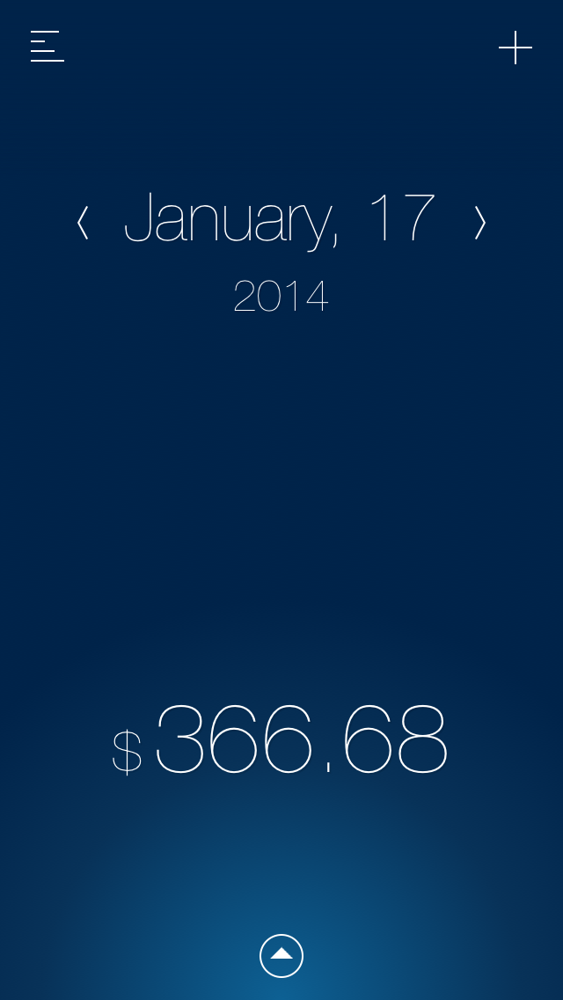
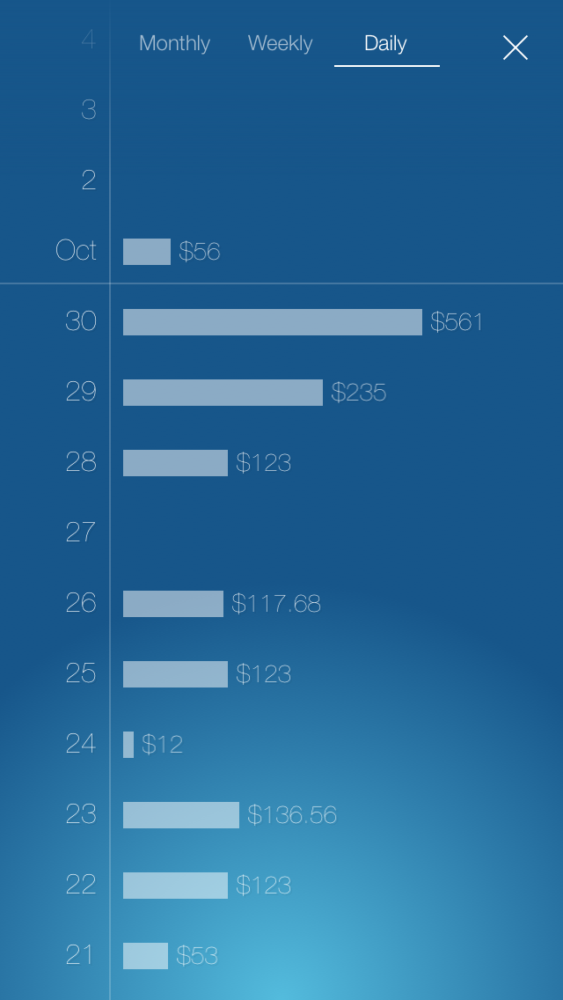
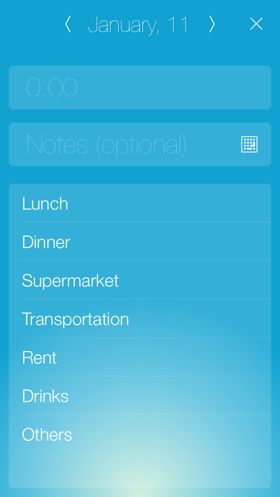
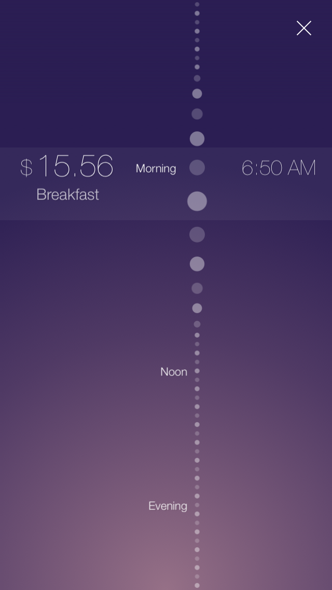

Simply Beautiful!
It's simpler and easier!
You just need to know how much you are spending.
See what other people is saying ...
-
by Bobby xiaoZhi Jan 26, 2014
界面很简洁很漂亮 iOS7风格 使用很方便 填数字就行了 无敌好
-
by Vampirecatt Jan 25, 2014
Добавьте пожалуйста подкатегории что бы потом можно было в статистике ясно видеть сколько денег уходит к примеру на продукты, гулянки и тд. А так Всем советую! Легко, удобно и очень информативно!
-
by Baspeka Jan 25, 2014
I recommend this app to anyone who enjoys simplicity, it's the best in its category but I'll like to see more colors
-
by 할만한께임 Jan 24, 2014
인터페이스가 세련되서 보기도 좋고 오늘에 포커스가 맞춰지다 보니 직관적이네요! 좋아요!
-
by Pigjake Jan 24, 2014
Very sweet and succinct. Does exactly what it says! Nice app. Thanks
-
by Ranger Xrzx Jan 24, 2014
Don't upgrade it! Please keep it simple. An amazing app with crazy design. Super useful due to minimalism.
-
by 顶了！ Jan 23, 2014
天啊，通过这个软件我才知道原来扁平化也可以这么眩！！
-
by PLKR Jan 23, 2014
This is the app I've been waiting for to get a handle on my spending. I have downloaded every finance app but I have never stuck to using any of them. The UI is pleasing, simple and easy to use. After entering the amount spent I like the automatic switch to enter a note. To those reviewers already asking for accounts, tags etc. read the description about the app. It was designed purposefully without those cumbersome features for those looking for a way to record their daily transactions only. I'm looking forward to using this app. Please don't change a thing!
-
by xixi100108 Jan 22, 2014
忠实用户了，更新后页面更漂亮，使用更方便，已经不光满足我记账的需求了。更是很好的一本记事本。现在我知道钱都花哪儿去了。超赞
-
by saschapo Jan 22, 2014
This app is what I needed for a long time! Awesome interface!
-
by Foodmaker Jan 16, 2014
Funktion und Design sind gut gemacht
-
by GioVaso Jan 16, 2014
Приложение очень простое. То что надо. Интерфейс красивый, использование в 2-3 кнопках. Теперь всегда буду знать на что и сколько потратил. Главное не забывать записывать.
-
by _baartek_ Jan 13, 2014
Aplikacja ma fantastyczny, minimalistyczny design oraz jest swym wyglądem dopasowana do iOS 7. Prosta w obsłudze dzięki swojej prostocie i intuicyjnym gestom. POLECAM
-
by Jandy.詹狄 Jan 10, 2014
个人觉得很好，很适合我，不需要像有些账本那样要设很多项目，然后再选，直接买生闷气，写什么，简单明了，赞！
-
by 성래ㅋㅋ Jan 5, 2014
다만 원화에 소숫점 자리는 필요가 없는데 약간 신경이 쓰이는 감이 있네요 다음 업데이트에는 수정되었으면 좋겠습니다!
-
by Nick Glow Jan 3, 2014
This beautifully designed app is exactly what I've been looking for. A simple daily expense tracker.
-
by Elenahx33 Dec 30, 2013
Me encanta! Es simple y cumple su cometido, la interfaz es preciosa. Felicidades!
-
by mattigeee Dec 5, 2013
One of the best UI on iOS 7 Silky smooth animations, pared back interface. Only what's necessary. Great app.
-
by 인나 Nov 18, 2013
어플엔 기록만하고 일주일마다 엑셀로 정리하면서 지출관리를 하고 있습니다. 비용만 간단하게 기록하는 비슷한 기능의 어플을 썼었는데, 디자인이나 사용법이 훨씬 이쁘고 직관적이여서 좋네용!! 쓰고있던 유료어플바로 지워버리도 이거 잘 쓰고 있음!
-
by vong chandara Nov 7, 2013
Great app ever. Convenience and so useful to control my balance
-
by Mark483 Oct 5, 2013
Very simple and functional app. Easy to use and gesture enabled. Work seamlessly with ios7 looks like if it was an Apple made app. Shows you in a minimalist clean way how you spend your money in an hourly basis to get a better control of your budget. Ideal for the "argent de poche" or every day money, not for keeping track of mortgages and big monthly pays.
-
by Live From Houston Oct 4, 2013
This app has become one of my daily use apps, is perfect if you want to track your monthly spending, or if you just wanna see which period you spend the most! iOS 7 design makes it look as its part of the OS.
-
by Myriadposting Oct 3, 2013
If you want to keep the record of all the coins mysteriously slipping through your fingers, then it's a pretty useful app. It's easy to use and check all the money I used so far Though it doesn't provide detailed pattern of your spending, it's suitable for a mobile phone so that you can keep track of your coins whenever you use them.
-
by SK0536 Oct 9, 2013
界面很炫并且十分简约！跟ios7 很搭。理财记录和查询都方便，很容易上手。是一款不错的软件。
-
by Javierriver Oct 3, 2013
This app looks just like it came as a stock app of iOS 7, it's simple, functional and beautiful. Jhonny Ive would be proud!
by Art176 Oct 9, 2013
Easy to use, yet offers enough options to answer needs and see how much you spend.
-
by 老笨 Sep 30, 2013
这款应用告诉我们，好的应用根本不需要太多的功能，简单，满足我们的需求即可。喜欢，赞一个。漂亮至极
by NachtJunge Oct 9, 2013
Ich habe schon so einige Ausgabenverwalter (zuletzt Next) getestet, an dieses wunderschöne Design und Schnelligkeit beim Eintragen von Ausgaben kommt wohl aber keine andere App so schnell ran. Top! Also LADEN!
-
by Alexander «porqz» Belov Oct 8, 2013
Awesome beautiful application! I select it for my everyday spendings.
-
by DuDu Tang Oct 7, 2013
如果你只要最最基本的功能，選他就對了！！
-
by Erin.Wang Nov 23, 2012
用过很多记帐软件，有收费的，有免费的用下来都觉得好复杂。这款应该是用到现在最简单的了，推荐一下，应该符合大部分人的需求。界面也很赞哦！
- 
- 
- 
- 